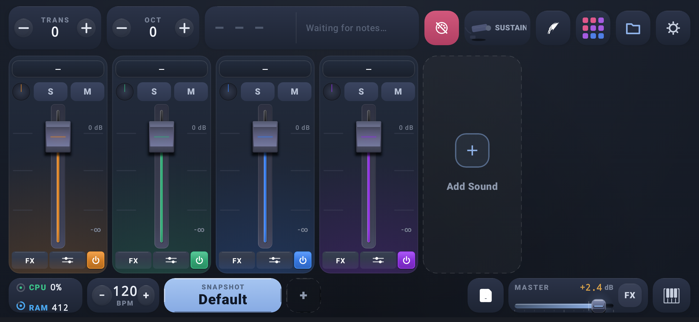
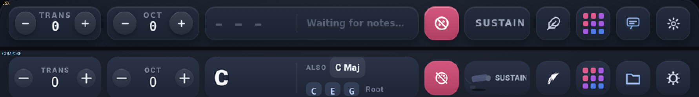
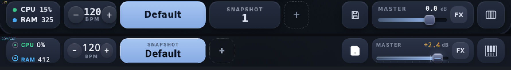
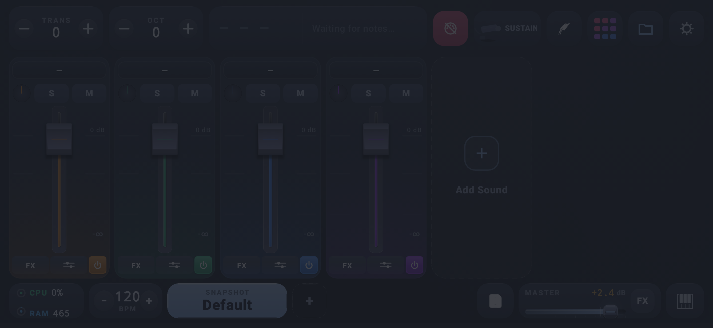

Mixer V2 — captures de la session
Tout est rendu par Robolectric (LiveUI) au format natif 2673×1233, puis affiché à l'échelle 1:1 (891×411 dp). Les bandes zoomées comparent le rendu Compose (bas) à la référence JSX (haut).
1. Vue complète — Mixer, accord C–E–G joué dans l'affichage d'accords
Comme demandé, les captures intègrent maintenant un accord joué : le bloc central du Topbar montre le symbole détecté.
2. Vue complète — Mixer au repos

3. Détails modifiés (Compose en bas, JSX en haut, zoom ×2)
Topbar épaissi + boutons +/− TRANS / OCT
Hauteur 44 → 55 dp. Les deux pastilles rondes sont réintégrées dans chaque stepper.

Bottombar réduite −25 % + CPU/RAM resserrés
Hauteur 58 → 44 dp. Écart CPU↔RAM 5 → 2 dp. Le rail Master et son thumb partagent désormais le même axe vertical.

4. DrumPad

5. Ce qui a changé dans cette session
- Bottombar : hauteur 58 → 44 dp (−24 %).
- Topbar : hauteur 44 → 55 dp (+25 %).
- CPU / RAM : espacement réduit de 5 à 2 dp (le style actuel est conservé, ce n'est pas une reprise du JSX).
- TRANS / OCT : boutons +/− ronds réintégrés (caps 24 dp, glyphe net, ombre douce, sans contour dur).
- Master slider : rail et thumb alignés sur le même axe vertical (l'ancien rendu laissait le thumb 2 dp au-dessus du rail).
- Accord : le bridge LiveUI accepte une commande
keys, donc les captures peuvent montrer un accord joué.